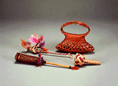
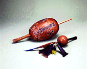

Congreso de Musicología 2000:
Instrumentos Etnicos en la Composición
Musical
El Diario de Caracas
25-2-2000

El viernes de la semana pasada culminó el "Congreso Venezolano de Musicología 2000", organizado por la Fundación Vicente Emilio Sojo (Funves) y la Escuela de Artes de la Facultad de Humanidades y Educación de la Universidad Central de Venezuela. En tres días intensos de charlas y discusiones con más de noventa asistentes de todo el país y treinta ponentes, se llevó a cabo el único evento del año en donde se reunen los especialistas de la investigación musical.
El Congreso 2000 se centró en "La Música como Expresión de la Nacionalidad", e incluyó, en menor número de ponencias la otra área del conocimiento musical que ha estado desatendida, la etnomusicología o el estudio del folklore musical. A pesar del oasis que representa este evento dentro del vacío en la investigación que mantiene su instituto hermano, Fundef, no asistieron los etnomusicólogos o folklorista, hecho extraño considerando que el tema, el Nacionalismo, involucra la utilización de material étnico, sean ritmos, melodías, instrumentos o conceptos en la composición de la música académica de Venezuela. El Nacionalismo ha sido una corriente o escuela artística iniciada por Vicente Emilio Sojo en la primera mitad del siglo XX en Venezuela y forma quizás el cúmulo de obras más importante de nuestro legado musical. Recordemos a la Cantata Criolla de Antonio Estévez o a la Fuga Criolla de Juán Bautista Plaza o el Joropo para piano de Moisés Moleiro.
Felicitamos a la Fundación Sojo por el esfuerzo de organizar este congreso, único en su clase, y por ofrecer una plataforma para el contacto profesional entre los investigadores, que de otra manera se hubieran mantenido aislados y desconectados de lo que hacen sus colegas. Es de notarse con especial atención el hecho de que la mayoría de los participantes que presentaron ponencias fueron investigadores noveles, resultantes de las cátedras de la Escuela de Arte de la UCV, del Postgrado de Musicología Latinoamericana de la UCV y de la Universidad Cecilio Acosta en Maracaibo. A cada investigador que entregó su ponencia escrita, Funves le canceló doscientos mil bolívares por su trabajo, lo que representa un antecedente de importancia ya que este justo trato laboral jamás había sucedido anteriormente. Funves va a publicar una selección de las ponencias generadas por el Congreso 2000 en su próxima edición de la Revista Musical de Venezuela, dedicada al tema del Nacionalismo y de esta manera soluciona el problema de la recopilación de trabajos de investigación en versión definitiva para su publicación. En un área tan especializada como la musicología, todavía la producción de investigaciones de altura es escaza, aunque se han triplicado los números si comparamos con la generación anterior que constaba sólo de tres personas: Alberto Calzavara, Walter Guido y José Peñín.
La ponencia que presentó el que suscribe se basó en la utilización de instrumentos étnicos en la composición de música académica del Siglo XX, tendencia desarrollada en varios países de América Latina y especialmente en Venezuela en la década de los ochenta y en los últimos cinco años. La necesidad de algunos compositores de imprimir un sentir de pertenencia regional y cultural en la música académica tuvo y tiene todavía como un recurso dentro de otras posibilidades de lograr este objetivo, la utilización como fuente sonora de instrumentos musicales regionales, o también llamados instrumentos étnicos, típicos o "no sinfónicos". Estos se pueden definir como los instrumentos autóctonos y meztizos que se derivan de un lugar y sentir geográfico-cultural determinado y que son reconocidos por la generalidad como representantes simbólicos o reales en un alto grado de esa cultura y región.
En este sentido la definición excluye a los instrumentos de la orquesta sinfónica a pesar de que éstos, como cualquier instrumento, tienen también su vínculo cultural y regional. Se puede redefinir la dicotomía "étnico/sinfónico" a través del concepto de "carga" cultural determinada que pueda tener o no un instrumento musical, donde su internacionalización y diversidad cultural de uso le resta grados de pertenencia cultural que originalmente tenía, ya que todo instrumento brota y nace de una determinada cultura. La definición de instrumento étnico se concreta además por oposición dependiente a los instrumentos sinfónicos, es decir, en simplicidad de base, un instrumento étnico es un instrumento "no-sinfónico", por el hecho de que el status quo instrumental en la composición académica ha sido históricamente y hegemónicamente sólo el instrumental de la orquesta sinfónica en cualquier parte del mundo, con las variaciones que surgen con el Nacionalismo en Latinoamérica.
Los estudiosos del Nacionalismo le han dedicado poco pensamiento a la utilización de los instrumentos étnicos para el propósito de la expresión de identidad cultural, dato que asombra ya que el instrumento conlleva, como caja de pandora, la música de una región. Su inmediatez visual ofrece además el reconocimiento de una cultura musical determinada. Oferta tanto su timbre singular, las técnicas idiomáticas de ejecución, así como recursos de elementos musicales que el instrumento o su música explotan de manera particular, además del contenido rítmico, melódico o armónico de la música de su cultura.
Desde el clímax del Nacionalismo latinoamericano en la primera mitad del Siglo XX, con el caso de Amadeo Roldán de Cuba y sus Rítmicas V y VI para instrumentos típicos cubanos (1930), y de Carlos Chávez en su pieza Xochipilli Macuilxochitl para instrumentos pre-cortesianos de México (1940), la tendencia del compositor en utilizar otros instrumentos que los sinfónicos para sus obras correspondía a una expresión del Nacionalismo. Es decir, los instrumentos eran símbolos visuales y sonoros de la cultura con la cual el compositor se quería asociar.
No obstante, ya en Carlos Chávez se detecta la utilización de estos instrumentos por razón de las sonoridades que producen, diferentes e inescuchadas por el mundo musical de tradición europea, y por el cambio que exigen en el sistema de lenguaje que el compositor emplea al introducirse en estos instrumentos. A manera de ejemplo, por más estudios que un compositor tenga en los conservatorios tradicionales de armonía, contrapunto, fuga, etc., estas técnicas son inservibles a la hora de componer con un par de maracas venezolanas, cuando el compositor se dá cuenta, si es sensible, que el mismo instrumento y la cultura musical que arrastra detrás le pueden dar indicios de técnicas y lenguajes nuevos a utilizar, como el movimiento de las manos y el ritmo altamente elaborado de los capachos venezolanos.
El artista que se empeñe en componer para estos instrumentos corre el riesgo de que su música no se pueda tocar en ninguna parte al menos de que él suministre (y toque) los instrumentos. La posibilidad de oir sus piezas internacionalmente va a estar cerrada, ya que los instrumentos no se consiguen con facilidad, y menos sus ejecutantes. Ejemplarizando, el Concierto para Cuatro y Orquesta de Vinicio Ludovic va a tener dificultades de ejecución fuera de Venezuela, al menos que Cheo Hurtado haga una gira, o que eventualmente existan métodos eficientes (audiovisuales, CD-ROM), para aprender a tocar al instrumento fuera de nuestras fornteras.
Una solución a este problema la dieron los compositores del Cono Sur en los años setenta, como en el caso de Coriún Aharonián, quienes utilizaban con predilección el medio electroacústico para componer y difundir sus obras. Con la música grabada no existe más la dificultad de la ejecución de un instrumento "raro" o inusual para las tarimas internacionales. Es curioso notar que la tendencia de la vanguardia, es decir lo que se está componiendo ahora mismo, está apuntada en esta dirección de nuevo, produciendo el disco compacto como resultado final de la creación y no la partitura, y aprovechando el poder de la tecnología digital casera.
En la década de los ochenta, la década más fructífera del siglo XX en el área de instrumentos étnicos, se dió solución al problema de la interpretación "exótica" a través de la formación de agrupaciones nuevas que reunían una cantidad y variedad de instrumentos étnicos heterogéneos como para llamarse orquestas. Este es el caso de la Orquesta Experimental de Instrumentos Nativos (OEIN) en Bolivia dirigida por Cergio Prudencio desde 1979, y en Venezuela la Orquesta de Instrumentos Latinoamericanos ODILA, liderizada en su primera fase por el que suscribe. La ODILA generó unas 16 obras de compositores venezolanos dedicadas a este nuevo y único ensamble, pero no cumplió con su función de ejecutarlas debido a su incapacidad de lectura de obras complejas. Otra vertiente interesante es la util por Joaquín Orellana y sus discípulos, los hermanos David e Igor de Gandarias, en Guatemala, quienes construyen sus propios instrumentos inventados en base a los folklóricos. En Mérida, Virgilio Ferguson dentro del Proyecto MAPIR construye sus instumentos en base al instrumental indígena de Venezuela.
En la actualidad, la tendencia se ha diversificado en nuevas proposiciones agrupadas en "casos" de utilización de los instrumentos étnicos, de los cuales podemos mencionar algunos como: el instrumento solista con ensamble sinfónico establecido (ej.: concierto de cuatro y orquesta, o de maracas y cuarteto de cuerdas); libre combinación de instrumentos étnicos (ej.: ODILA o MAPIR); ensamble étnico o híbrido establecido con ensamble sinfónico establecido (ej.:Gurrufío con orquesta, grupo de arpa-joropo y orquesta); y el caso más común, instrumentos étnicos de percusión dentro de la percusión de la orquesta sinfónica. Los percusionistas por la conformación multicultural de su instrumental, son los ejecutantes más abiertos y dispuestos para emprender obras con instrumental no-sinfónico.
Nos sorprende conseguir que 26 de los 89
compositores
vivientes en Venezuela han compuesto obras con instrumentos
étnicos.
Esta cifra representa un 30% de la producción nacional,
con lo
cual
podríamos determinar que constituye un movimiento o
tendencia
musical
concreta y viva. Por otro lado, la última tendencia en
este
desarrollo
es la utilización conjunta de los instrumentos
étnicos de
cualquier parte, pero no en representación de un lugar o
de una
cultura determinada, sino por sus sonoridades. Con esta
vertiente de
vanguardia,
obvio resultante de la globalización, podríamos
afirmar
que
el Nacionalismo expuesto a través de los instrumentos
étnicos
tiene su fin cercano, y la nueva tendencia la podríamos
acuñar
con el término de Globalismo, muy acorde con el
Siglo XXI.